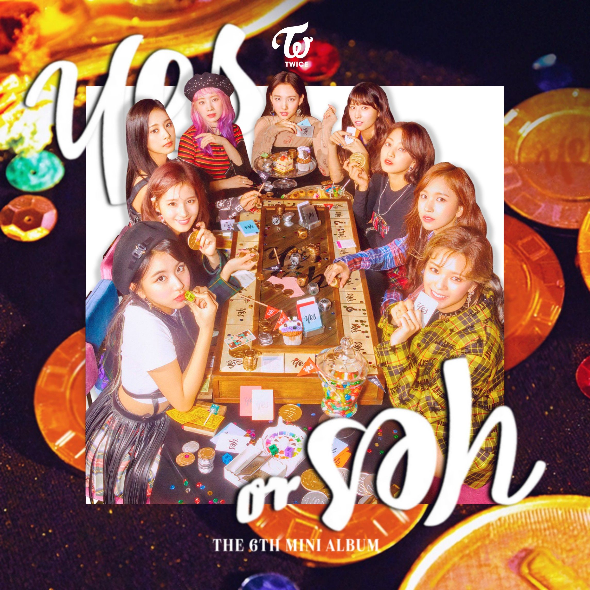
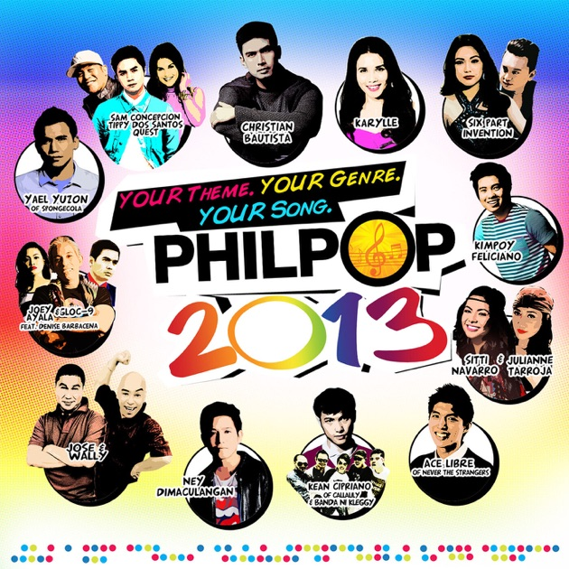

Harmonies of Diversity: Exploring
K-Pop, OPM, and R&B Music
Dive into the vibrant world of music genres that resonate with my soul. From the infectious beats and captivating performances of K-Pop to the heartfelt melodies of Original Pilipino Music (OPM), and the soulful rhythms of R&B, each genre holds a special place in my heart.

YES or YES
is a song by the South Korean girl group TWICE. It was released on November 5, 2018, as the title track for their sixth extended play (EP) of the same name.
Artist: TWICE

Say Yes
is a song performed by South Korean artists Loco and Punch. It was released as part of the soundtrack for the popular Korean drama series "Moon Lovers: Scarlet Heart Ryeo".
Artist: Loco, Punch

God of Music
is a song that expresses the passion and dedication that the members of the group have for music. It serves as an anthem for musicians and artists, highlighting the importance of music.
Artist: SEVENTEEN

Dati
is known for its catchy melody and heartfelt lyrics that speak about reminiscing about past memories and lost love. The song's title translates to "Before" in English.
Artist: Sam Concepcion and
Tippy Dos Santos
Babaero
is a Filipino song performed by Gins & Melodies featuring Hev Abi. The term "babaero" in Filipino culture refers to someone who is known for being a flirt or a womanizer.
Artist: gins&melodies ft. Hev Abi
Saan?
The song "Saan?" by Maki explores the emotions of longing, regret, and the constant search for a lost love. The chorus suggests that even after years have passed.
Artist: Maki

Thinking Out Loud
is a soulful romantic ballad exploring enduring love and commitment. Its heartfelt lyrics express a desire for a lasting relationship, promising to love someone unconditionally.
Artist: Ed Sheeran

Perfect
With its tender lyrics and sweet melody, the song captures the essence of true love, describing the beauty of being with someone who makes you feel complete.
Artist: Ed Sheeran

Shape of You
is a dancehall and tropical house-inspired track depicting Sheeran meeting someone at a bar and being drawn to their physical appearance and personality.
Artist: Ed Sheeran